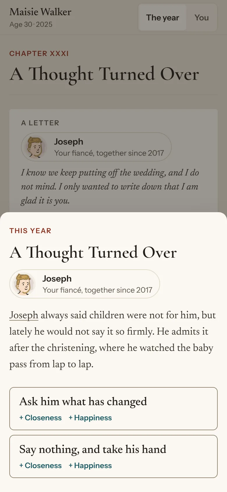
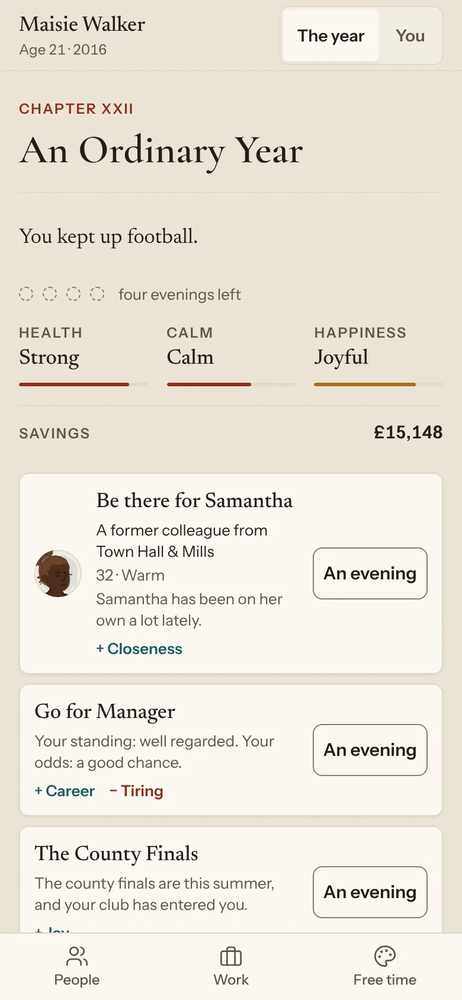
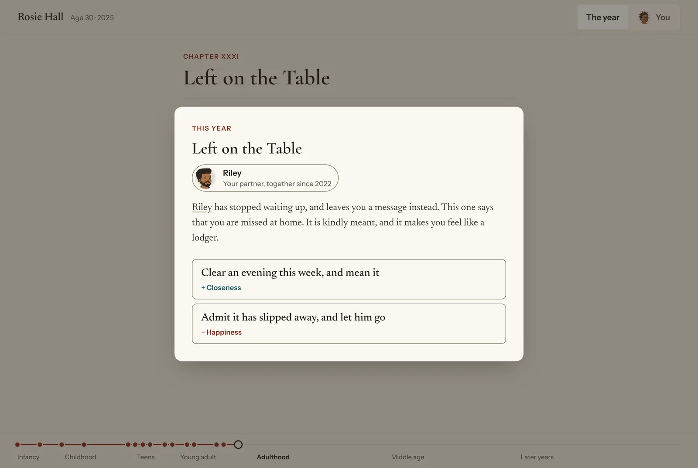
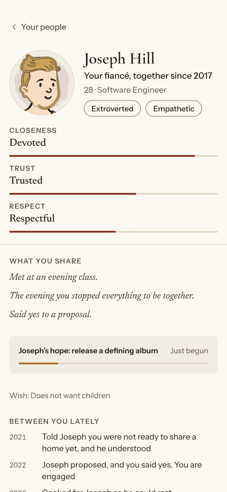

A life simulator that runs in a web browser. You live one life from start to end, and the game tells it as a memoir, with one chapter for each year.

Infancy, childhood, teens, young adult, adulthood, middle age, later years.
Home life and keeping up a hobby happen without using an evening. When the life ends, an epilogue looks back over all of it.

The main aim is for the game's systems to surprise the player with how deep and true to life they are. Depth here means systems that act on each other. For example:
A move to a new club takes your family away from your partner's job.
A new manager comes in and does not rate you.
The memoir is how the game is told, not the main aim. How often things happen is set to make a better story, not to match national figures.

Also: hobbies, school results, money, and a business of your own.
